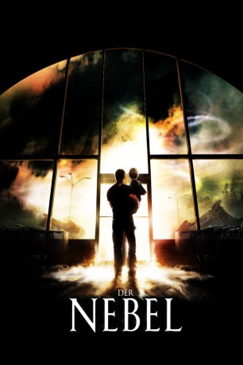
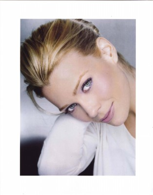
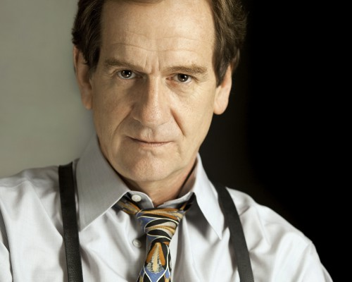
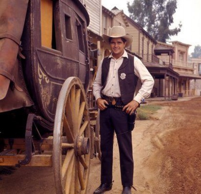
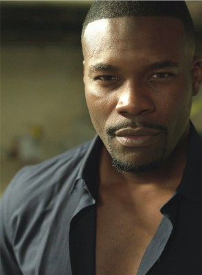
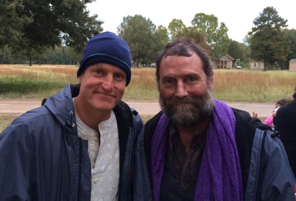

#2232 Der Nebel
Alternativ: The Mist
 
 IMDB-Wertung: 7.2 / 10
IMDB-Wertung: 7.2 / 10  Metascore: 58
Metascore: 58 
Ein mysteriöser Nebel, der die gesamte Landschaft einhüllt, zwingt die Bewohner einer amerikanischen Kleinstadt, sich in ihrem Supermarkt zu verschanzen. Doch die Mauern können den Schutzsuchenden nur scheinbar Sicherheit bieten. Die Ungewissheit, welche Gefahr in den weißen Schleiern auf sie wartet, zerrt an den Nerven der Zwangsgemeinschaft, schürt Angst und Verzweiflung. Panik macht sich breit, schon bald droht die Grenze zwischen äußerer und innerer Bedrohung zu verschwimmen. Im Angesicht des Todes ist sich jeder selbst der nächste und jeder Nächste wird zum erbitterten Feind…
verschieben zu "X:\Person\Stephen King"
Jahr: 2007
Dauer: 126 Minuten
FSK: 16
Land: USA Studio: MGMTonspuren: DTS - ,
Untertitel: Deutsch,
Auflösung: 1080p (1920x1080) Größe: 10229 MB
Genre: Thriller, Horror, Sci-Fi
Regisseur:  Frank Darabont
Frank Darabont
Drehbuch: Frank Darabont, Stephen King
Soundtrack: Mark Isham
Darsteller:
 Thomas Jane als David Drayton
Thomas Jane als David Drayton Marcia Gay Harden als Mrs. Carmody
Marcia Gay Harden als Mrs. Carmody-  Laurie Holden als Amanda Dunfrey
 Andre Braugher als Brent Norton
Andre Braugher als Brent Norton Toby Jones als Ollie Weeks
Toby Jones als Ollie Weeks William Sadler als Jim
William Sadler als Jim Jeffrey DeMunn als Dan Miller
Jeffrey DeMunn als Dan Miller Frances Sternhagen als Irene Reppler
Frances Sternhagen als Irene Reppler Nathan Gamble als Billy Drayton
Nathan Gamble als Billy Drayton Alexa Davalos als Sally
Alexa Davalos als Sally Chris Owen als Norm
Chris Owen als Norm Sam Witwer als Private Jessup
Sam Witwer als Private Jessup Robert C. Treveiler als Bud Brown
Robert C. Treveiler als Bud Brown David Jensen als Myron
David Jensen als Myron- Melissa McBride als Woman With Kids at Home
-  Andy Stahl als Mike Hatlen
-  Buck Taylor als Ambrose Cornell
- Jackson Hurst als Joe Eagleton
 Brian Libby als Biker
Brian Libby als Biker- Susan Malerstein als Hattie
 Juan Gabriel Pareja als Morales
Juan Gabriel Pareja als Morales- Walter Fauntleroy als Donaldson
-  Amin Joseph als M.P.
 Kelly Collins Lintz als Steff Drayton
Kelly Collins Lintz als Steff Drayton Tiffany Morgan als Woman #2
Tiffany Morgan als Woman #2- Kim Wall als Terrified Woman
 Julio Cedillo als Father
Julio Cedillo als Father Ron Clinton Smith als Mr. Mackey
Ron Clinton Smith als Mr. Mackey- Gregg Brazzel als Tom Smalley
 Dodie Brown als Screaming Woman
Dodie Brown als Screaming Woman- Taylor E. Brown als Screaming Child
 Kevin Beard als Shopper #2 , uncredited
Kevin Beard als Shopper #2 , uncredited- Derek Cox-Berg als Teenager #1 , uncredited
- John F. Daniel als Mrs. Carmody's Follower , uncredited
- Ron Fagan als Shopper , uncredited
 Ted Ferguson als Norton Group Member , uncredited
Ted Ferguson als Norton Group Member , uncredited Louis Herthum als Colonel , uncredited
Louis Herthum als Colonel , uncredited- Walt Hollis als Bio Hazard Engineer , uncredited
- Brian Scott Hunt als Teenage Boy #2 , uncredited
- R. Todd Jones als Military Soldier , uncredited
-  Jimmy Lee Jr. als Shopper , uncredited
 Cherami Leigh als Teenage Girl , uncredited
Cherami Leigh als Teenage Girl , uncredited Ritchie Montgomery als Paisley Hat Man , uncredited
Ritchie Montgomery als Paisley Hat Man , uncredited James Paul als Grocery Store Customer , uncredited
James Paul als Grocery Store Customer , uncredited- Chuck Vail als Military Soldier , uncredited
- Steven E. Williams als Mash Group Member , uncredited
- Brandon O'Dell als Bobby Eagleton
- Mathew Greer als Silas
- Ginnie Randall als Woman #1
- Sonny Franks als Man with El Camino
Datei: X:\2007(N-Z)\Nebel, Der (2007, FSK16, 1920x1080).mkv seit 22.10.2015
Festplatte: HD 2007(A-Z)-2008(A-F)
 Es gibt insgesamt 56 Filme in der Gruppe '2007(N-Z)'
Es gibt insgesamt 56 Filme in der Gruppe '2007(N-Z)'